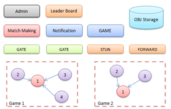
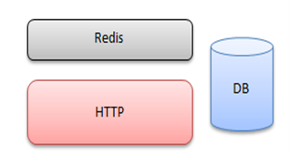

MoSCoW Table
Below are our MoSCoW requirements. The requirements we have met are marked with "Finished" while those that we haven't are marked with an "X".
| ID | Requirements | Priority | State | Contributors |
|---|---|---|---|---|
| 1 | AR pet that can be overlayed on reality | Must | Finished | Ce, Toma |
| 2 | Automatic Speech Recognition and Speech-to-Text Input/Output | Must | Finished | Ce, Toma |
| 3 | Search for Bus Times and Tube Times | Must | Finished | Can |
| 4 | Search for daily news via keywords | Must | Finished | Can |
| 5 | Backend Web Server to store user information and provide cross-application support | Must | Finished | Alex |
| 6 | Cross-platform integration to transfer pet | Should | X | All |
| 7 | Pet animations when interacted with | Must | Finished | Ce, Toma |
| 8 | Website / Development Blog | Must | Finished | Alex, Ce, Can |
| 9 | API Integration (for extendability) | Must | Finished | All |
| 10 | Widgets for the app (such as music scrollbar, alarm clock) | Should | Finished | Ce |
| 11 | Social media integration with the pet | Should | X | All |
| 12 | Personalized daily routines based on user interest and app usage | Should | X | Alex, Ce |
| 13 | Personalized media and news display based on user preferences | Could | X | Ce, Can |
| 14 | Notifications and reminders when the users haven't logged in in a while | Could | X | Alex, Ce, Can |
| 15 | Feeding schedule for pet, like Tamagotchi | Could | X | All |
| 16 | Sentient AI Pet connected to Robots | Won't | - | - |
| 17 | WebGL Version of the app | Won't | - | - |
| 18 | Pet integration with Virtual Reality | Won't | - | - |
| 19 | Multilanguage support | Won't | - | - |
Individual Contributions
| Work Packages | Can | Ce | Alex | Toma |
|---|---|---|---|---|
| Client Liaison | 10% | 40% | 40% | 10% |
| Requirement Analysis | 30% | 60% | 10% | 0% |
| Research | 20% | 40% | 20% | 20% |
| UI Design - Desktop | 45% | 55% | 0% | 0% |
| UI Design - Mobile | 0% | 0% | 0% | 100% |
| Programming | 20% | 30% | 25% | 25% |
| Testing | 0% | 34% | 33% | 33% |
| Development Blog | 80% | 10% | 10% | 0% |
| Website Editing | 33% | 33% | 34% | 0% |
| Video Editing | 0% | 10% | 90% | 0% |
| Overall Contribution | 25% | 25% | 25% | 25% |
| Roles | UI Designer, Programmer, Report Editor | Programmer, Researcher, Project Manager, UI Designer | Programmer, Client Liaison, Website editor | UI Designer, Programmer, Tester |
AR
The main AI technology used is Automated Speech Recognition, text to speech and recommendation systems.
IBM Watson: Watson is IBM’s suite of enterprise-ready Artificial Intelligence (AI) services, applications, and tooling [6]. Automated Speech Recognition and Text to Speech (TTS) are integrated within IBM Watson.
Automated Speech Recognition (ASR): IBM Watson® Speech to Text technology enables fast and accurate speech transcription in multiple languages for a variety of use cases. The service leverages machine learning to combine knowledge of grammar, language structure, and the composition of audio and voice signals to accurately transcribe the human voice.
Text to speech (TTS): IBM Watson® Text to Speech is an API cloud service that enables user to convert written text into natural-sounding audio in a variety of languages and voices within an existing application or within Watson Assistant. The audio uses appropriate cadence and intonation for its language and dialect to provide voices that are smooth and natural.
Recommender system: A recommender system, or a recommendation system (sometimes replacing 'system' with a synonym such as platform or engine), is a subclass of information filtering system that seeks to predict the "rating" or "preference" a user would give to an item [7]. One approach to the design of recommender systems that has wide use is collaborative filtering. Collaborative filtering is based on the assumption that people who agreed in the past will agree in the future, and that they will like similar kinds of items as they liked in the past. The system generates recommendations using only information about rating profiles for different users or items. By locating peer users/items with a rating history similar to the current user or item, they generate recommendations using this neighborhood.
Animations
Characters, animals, plants, and other moving objects in the game need to be designed by game animators to achieve realistic effects. Generally, 3ds Max, After Effects, and Photoshop are used to do bone skin binding production. However, due to shortness of time and people, we may not have the time to learn and do these from scratch. Website like Mixamo, Free3d provides free 3d models and animations, which could be of great help.
Server
Since our project is multi-platform, we’ll need a server to ensure devices of the same account see identical behavior of a pet, so that scenes like a cat jump from one screen to another is achievable. Pets’ data should also be shared among devices with no differences.
Game server: Our server needs to synchronize the position and status of the pet in the current scene to each client as the minimum standard. This form is a bit like a Battle.net server. The server will choose one person to be the Host, and others will be P2P to connect to the player who is in charge. STUN is to help players establish a P2P traction serve r, and because P2P connectivity is only about 75%, players who are unconnected will forward it through Forward. [Figure 1] A weak interaction HTTP server should also be sufficient. [Figure 2] It only needs a browser to make debugging clear.
|  |  |
Cloud server: More and more people choose cloud servers, which can provide better security and stability, and reduce the difficulty of development, operation, and maintenance. Google cloud may be a good start.
Review of Similar Projects
Pokémon Go is one of the most famous and earliest AR games, and it has similarities with AR part of our project. In Pokémon Go, users catch and collect Pokémon under AR mode. It encourages users to go out by integrating Google Map API within, so that the more places user discovered, the more Pokémon he will collect, the more powerful he will be. They can train it by having combat with other trainers, interacting with them or feeding them to increase intimacy. Likewise, in WAPETS2.0 users can interact, play and feed their WAPETs under AR mode, and there will be intimacy system and social media integration. Many researchers suggests that Pokémon GO reduced anxiety about interacting with strangers [8], Pokémon GO increases attention-concentration in adolescents and players feel more happy than non-players [9], and help to build social connectedness through real-world engagement [10]. We have reason to hope that WAPETS2.0 can bring such a positive impact to society as well.
For Desktop App, Desktop Goose [11] may be the latest most similar project. It has a large number of interactions - nab user's mouse, track mud on screen, leave user a message, deliver user memes... However, we would expect our desktop pet to be more serious - sit idly, and only move on drag. In addition, we will have functionalities of voice control and chatbot.
References
- Technologies, U., 2022. Unity Platform. [online] Unity. Available at: https://unity.com/products/unity-platform [Accessed 20 February 2022].
- Innovecs Games. 2022. Unity for XR Development: Why is it the Best Choice So Far?. [online] Available at: https://www.innovecsgames.com/blog/unity-for-xr-development/ [Accessed 20 February 2022].
- Docs.microsoft.com. 2022. C# docs. [online] Available at: https://docs.microsoft.com/en-us/dotnet/csharp/ [Accessed 20 February 2022].
- 3D Development Bootcamp & XR Courses | Circuit Stream. 2022. Ultimate AR Comparison Guide | Circuit Stream. [online] Available at: https://circuitstream.com/blog/augmented-reality-guide/ [Accessed 20 February 2022].
- UCL Computer Science. 2022. Touchless Computing with UCL’s MotionInput v2.0 and Microsoft. [online] Available at: https://www.ucl.ac.uk/computer-science/news/2021/jul/touchless-computing-ucls-motioninput-v20-and-microsoft [Accessed 20 February 2022].
- Ibm.com. 2022. IBM Academic Initiative. [online] Available at: https://www.ibm.com/academic/topic/artificial-intelligence [Accessed 20 February 2022].
- Francesco Ricci and Lior Rokach and Bracha Shapira, Introduction to Recommender Systems Handbook, Recommender Systems Handbook, Springer, 2011, pp. 1-35
- Lori Kogan, Peter Hellyer, Colleen Duncan, Regina Schoenfeld-Tacher, A pilot investigation of the physical and psychological benefits of playing Pokémon GO for dog owners, Computers in Human Behavior, Volume 76, 2017, Pages 431-437, ISSN 0747-5632, https://doi.org/10.1016/j.chb.2017.07.043. (https://www.sciencedirect.com/science/article/pii/S0747563217304661)
- Alberto Ruiz-Ariza, Rafael Antonio Casuso, Sara Suarez-Manzano, Emilio J. Martínez-López, Effect of augmented reality game Pokémon GO on cognitive performance and emotional intelligence in adolescent young, Computers & Education, Volume 116, 2018, Pages 49-63, ISSN 0360-1315, https://doi.org/10.1016/j.compedu.2017.09.002. (https://www.sciencedirect.com/science/article/pii/S0360131517302002)
- Vella K, Johnson D, Cheng VWS, et al. A Sense of Belonging: Pokémon GO and Social Connectedness. Games and Culture. 2019;14(6):583-603. doi:10.1177/1555412017719973
- Goose, D., 2022. Desktop Goose by samperson. [online] itch.io. Available at: https://samperson.itch.io/desktop-goose [Accessed 29 March 2022].